Production finance platform at Conduiit
Taking film production finance out of spreadsheets
Conduiit is where productions for Netflix, Prime Video, HBO, Starz and Discovery handle purchase orders, payment requests and approvals. The product already worked, but its interface had aged. As its only designer, I rebuilt it from the smallest piece up: a design system, a dashboard for each role, light and dark modes, and a theme every company can brand as its own.

- Role
- Sole UX/UI designer, end to end
- Company
- Conduiit
- Years
- 2021 to 2022
- Platform
- Web and mobile web
- Scope
- Rebrand, design system, dashboards, print
At a glance
The problem
Productions ran purchase orders and approvals through email, spreadsheets and shared folders, and the product built to replace them had an interface that had aged.
What I did
Rebuilt it on a design system: a dashboard per role, an approval matrix with spending limits, pre-audit checks, and themes each studio can brand.
The outcome
Conduiit still runs on the system we built, and each studio brands its own workspace without asking for design work.
The business
Built by a production accountant who lived the problem
Conduiit was founded in 2018 by Shawn Hamilton, a former production accountant at Amazon, and Jason Thurman, after Hamilton saw how much time productions lost moving purchase orders and approvals through paper, email and spreadsheets.
It sells on a SaaS model, and its argument is time and control. Hamilton has said a company can save around 30 hours of work a week, and in one year the platform oversaw $70 million in transactions. Production accounting suites like GreenSlate also offer digital purchase orders, so Conduiit has to win on how easy the daily work feels.
That made the interface part of the sales pitch. Producers approve from wherever they are, accountants need every request complete and correctly coded, and a studio paying for the platform wants to see its own brand when its people log in.
More than 200 clients, from streaming services to independent producers
Conduiit's clients include US TV networks, streaming services and independent production companies. Productions for the brands below run their spending through it, along with independents such as Jigsaw Productions and Partially Important Productions.
Before Conduiit, their production and accounting teams moved purchase orders and approvals through email, spreadsheets and shared folders.
The starting point
A product people relied on, wearing an old interface
Conduiit's founder, based in New Jersey, already had the platform running. He needed a complete rebrand and a new interface.
Screens of the old app weren’t kept, so this story starts where every user does: the landing page on the right. It’s what people see before signing in, and every flow in the redesign begins there.
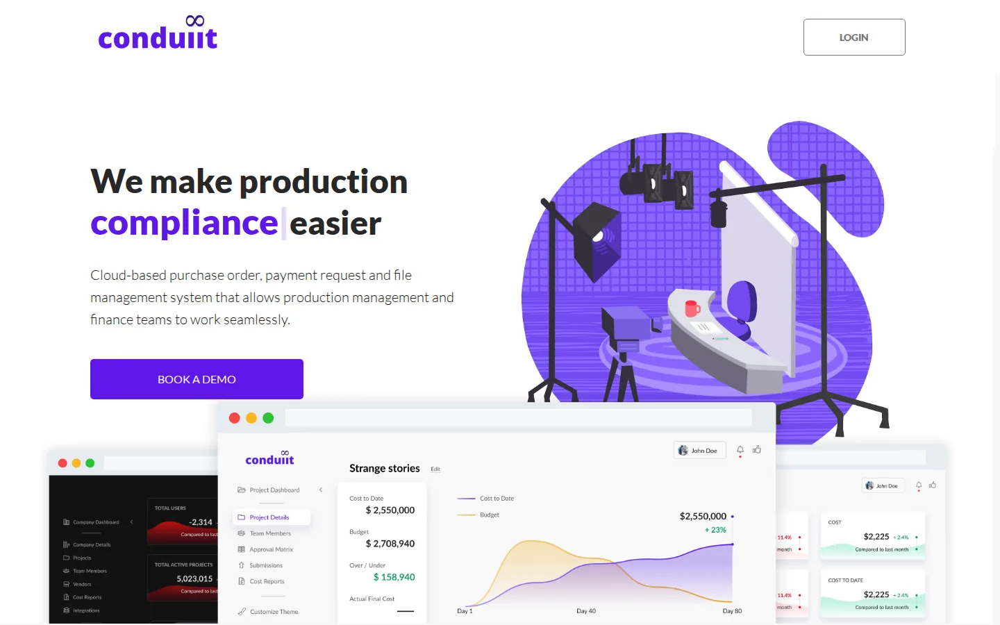
Who signs in
Three roles, each with its own dashboard
Each flow starts at login and branches by role. A company buys the service, and inside it every person sees a dashboard and a menu built around what they're responsible for.
-
Company admin
Sets up the company and looks across all of its productions: team, vendors, cost reports and integrations.
-
Project admin
Runs one production: who's on it, who approves what, and the submissions and cost reports that come in.
-
Project manager
Handles the day-to-day spending: purchase orders, credit cards, wire transfers and check requests, and approves them.
The build
From a color token to a full dashboard
I built the system bottom up, following atomic design. Each level only uses pieces from the level below it, so a change to one token reaches every screen. Scroll to put the dashboard together the same way.
Rebuilt in HTML from the component library, with sample data.
-
1Tokens
Color, type and space
Primary violet
#561DE2, a lighter#7C45EF, and a 10% tint for selected states. Text in three greys, green and red only for the graphs, amber as the second accent. Type is Lato, sized in rem from a 16px base: H1 at 28px, H2 at 24px, body and labels at 16px. -
2Atoms
Buttons, tabs, fields and icons
Primary, secondary and negative buttons share one shape and differ only in fill. Every field has default, active and filled states, and each 20px icon has default, hover and active versions.
-
3Molecules
The pieces people actually read
A KPI card pairs a figure with its change from last month, over a red or green wave. A table row carries view and delete actions, and every column header has its own search.
-
4Organisms
Sidebar, header and data table
The sidebar collapses to icons, and the header shrinks on scroll so the table keeps the room. Notifications live in the header as toasts and a dropdown, so approvals reach people wherever they are in the app.
-
5Screens
One layout for every role
Each role's dashboard uses the same parts in a different order. From page to page, only the menu items and the main button change, so people who switch roles already know their way around.
The style guide
The rules behind the pieces
The guide covers color in light and dark mode, typography, icons, every component with its states, and a rem-to-pixel chart for the developers.
Default colors
- Primary#561DE2
- Primary light#7C45EF
- Selected#EEE8FC
- Accent#EBA518
- Text#212121
- Label, 75%#575757
- Menu, 64%#717171
- Background#F9F9F9
- Shadow#D4D1E3
- Graph, up#0B9962 / #C4F3E3
- Graph, down#F0001C / #FFC7CE
Typography
- H1
- Cost reportsLato Bold, 28px (1.75rem)
- H2
- New purchase orderLato Regular, 24px (1.5rem), text at 75%
- Body
- Add integration information below.Lato Regular, 16px (1rem)
- Menu
- Default at 64%, active in primary
Dark mode: height instead of shadow
Dark mode follows Material's elevation model. On a #121212 background, shadows don't read, so surfaces get lighter as they rise: a white overlay of 5%, 11% or 16%. Text is white at 90%, 60% and 38% for high, medium and low emphasis.
The product
The screens people work in every day
Every production at a glance
Six KPIs at the top, each compared with last month. Red and green waves show which numbers moved the wrong way before anyone reads them. Below, every cost report sits in one table, filtered by status and downloadable in one click.
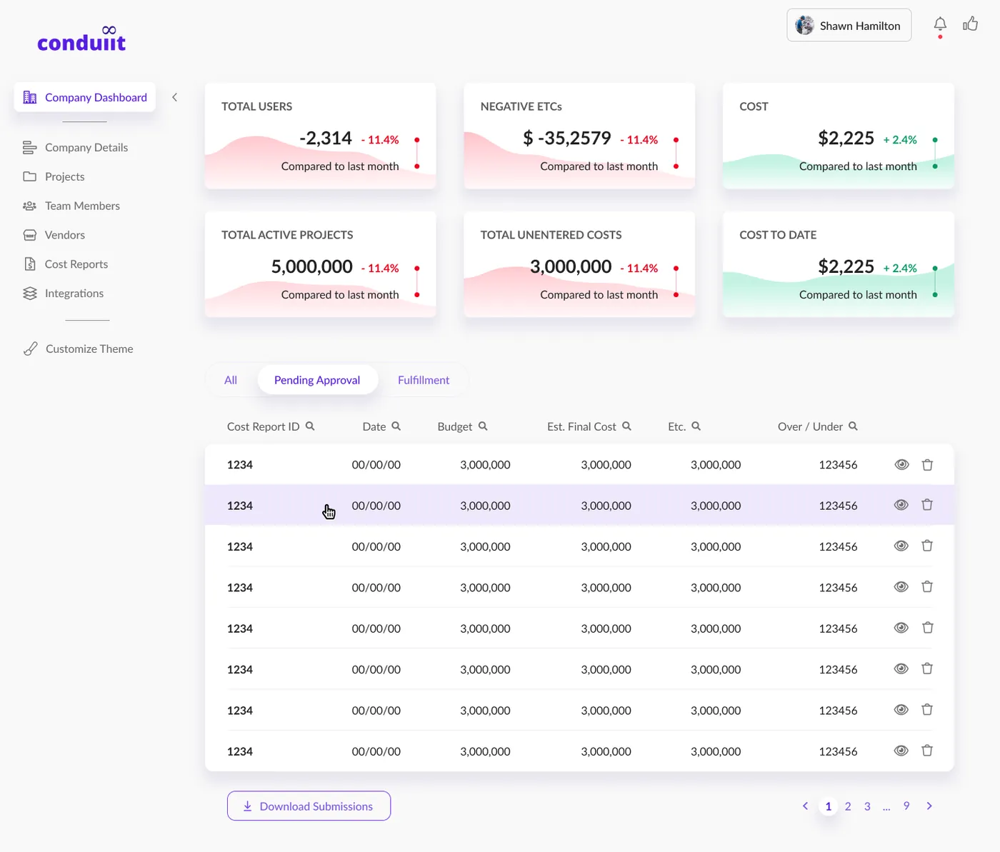
Approval chains you can drag
Project admins decide who approves what by moving people between levels: super admin, manager level 1 and manager level 2. Each level comes with its own spending limit, so a request goes as high as its amount requires and no higher. On a phone, the same levels stack into a vertical list.
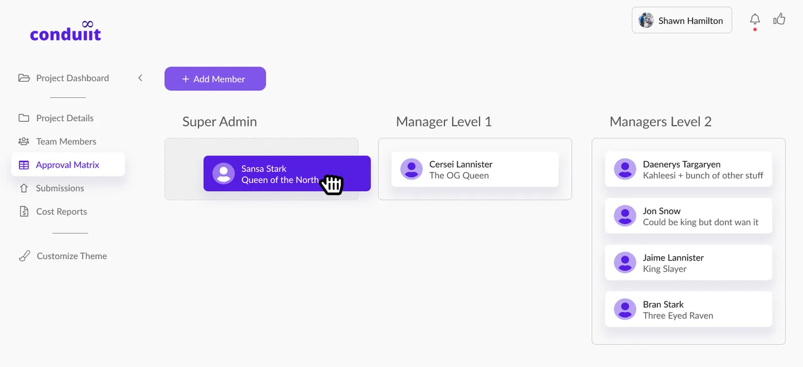
Forms that replace paper
Purchase orders, check requests and wire transfers share one form pattern. An order can hold several account codes, and supporting files attach right inside it, so accounting gets the documents with the request.
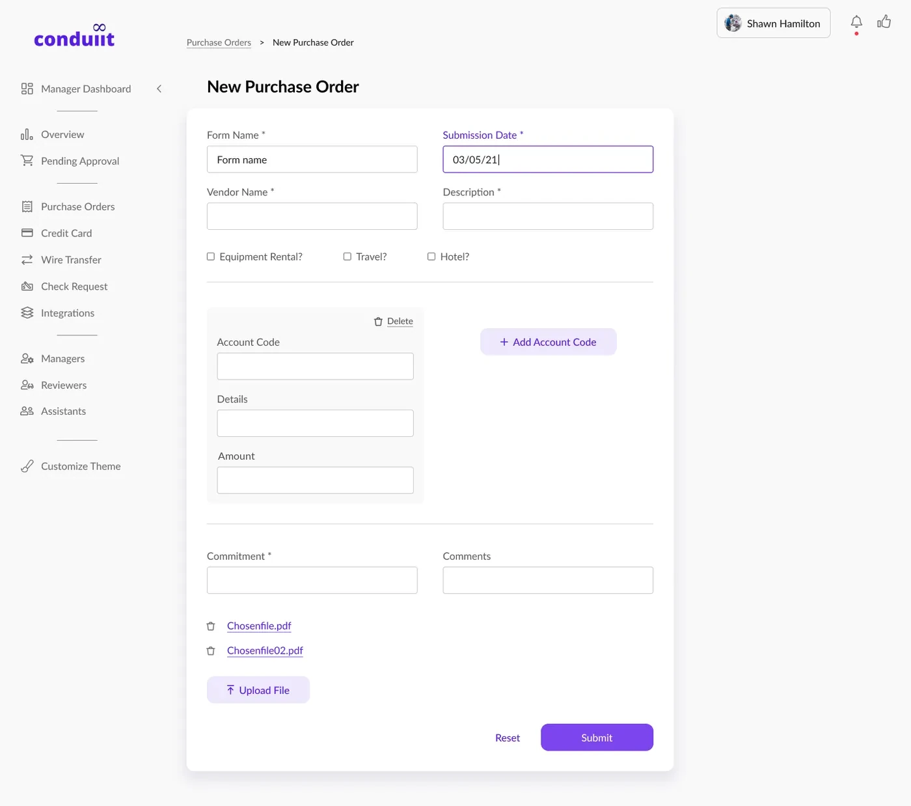
Approvals that come to you
The thumbs-up in the header lists every purchase order and check request waiting on you. Managers approve them one by one or all at once without leaving the page they're on.
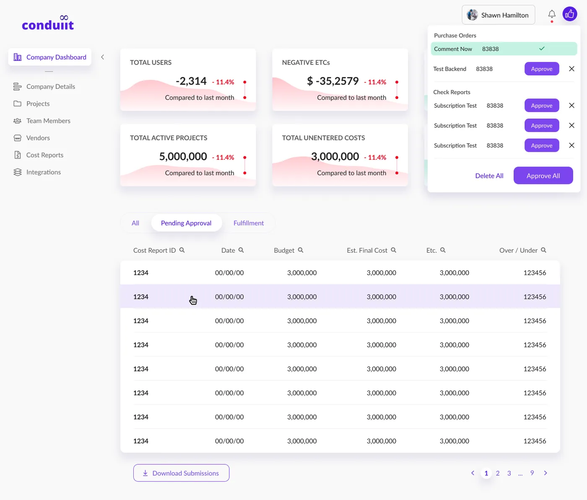
Customize theme
Each company can make it look like theirs
A company admin picks a color, uploads a logo and chooses light or dark. The chosen color replaces the primary, and the system derives the rest from it. Everything else stays the same. Try it on the dashboard.
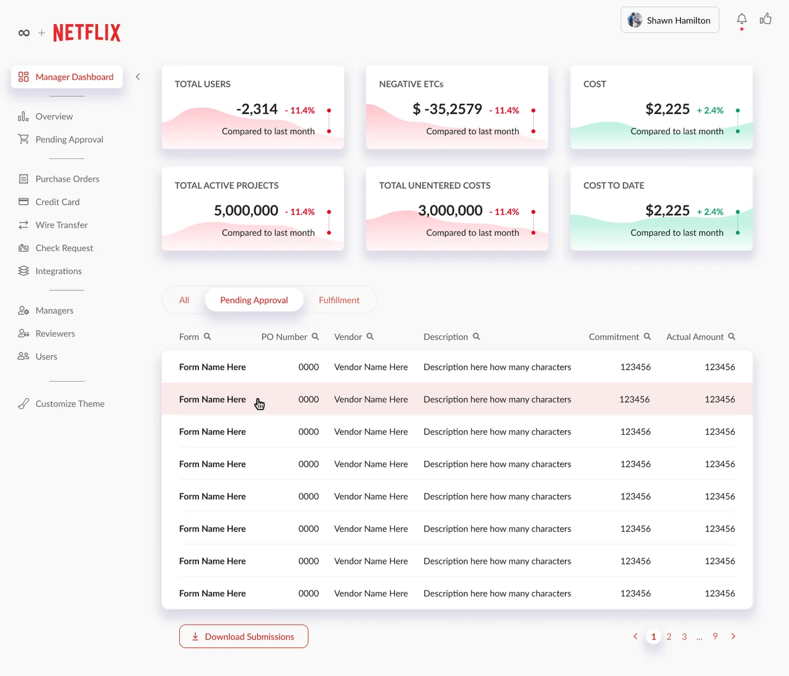
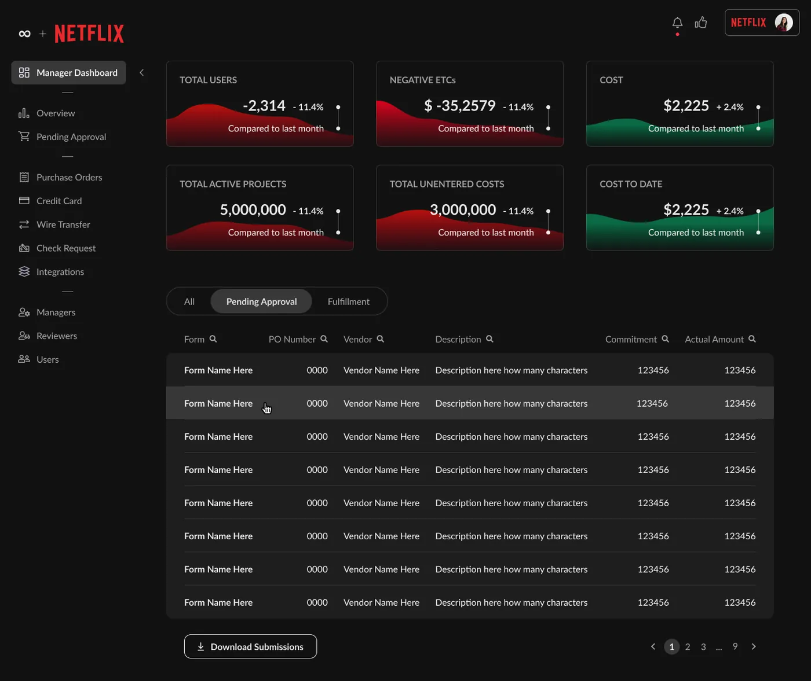
Mobile web
The same system on a phone
On small screens the KPI cards stack two by two, the sidebar moves into a hamburger menu and the approval matrix becomes a vertical list. The components don't change, only how they're arranged. Scroll inside each phone.
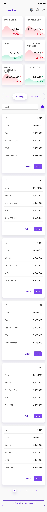
DashboardScroll inside the screen
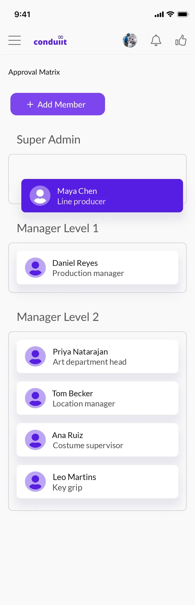
Approval matrixScroll inside the screen
Integrations and reports
Connected to the tools finance already uses
Conduiit Connect links the platform with the accounting software each production runs. In this flow, a company sets up Revolution Entertainment Services' Probooks and tests the sync of its purchase orders.
Every table also has a download button, so submissions and cost reports go out as spreadsheets for Excel or any similar tool.
Before a submission reaches accounting, pre-audit checks flag what would bounce it back: an account code that doesn’t fit the expense, or a missing receipt or invoice. Fixing it at the source is cheaper than finding it at month end.
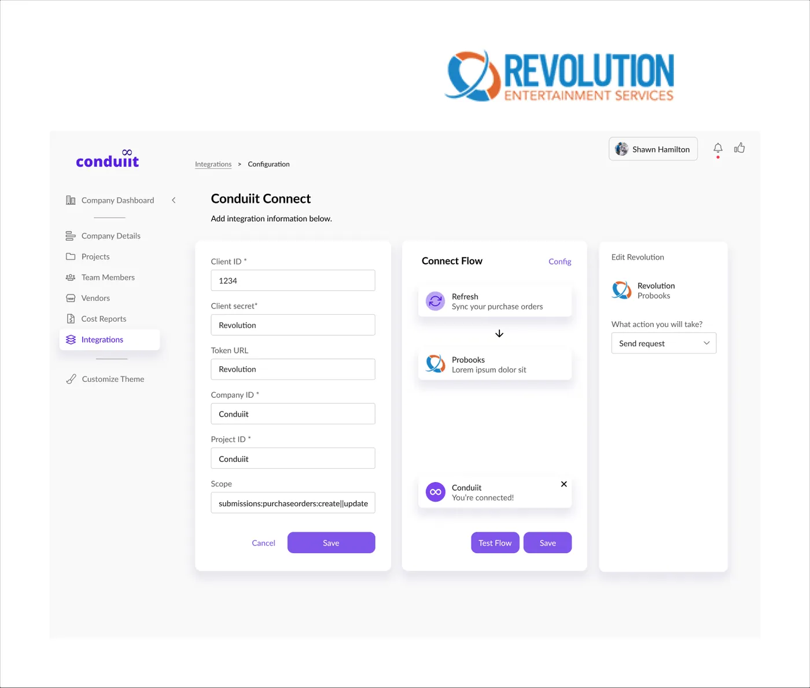
Off screen
The new identity, on paper
With the system in place, I designed a two-page flyer to hand out at industry events and a set of business cards, both built on the same palette, type and illustration style.
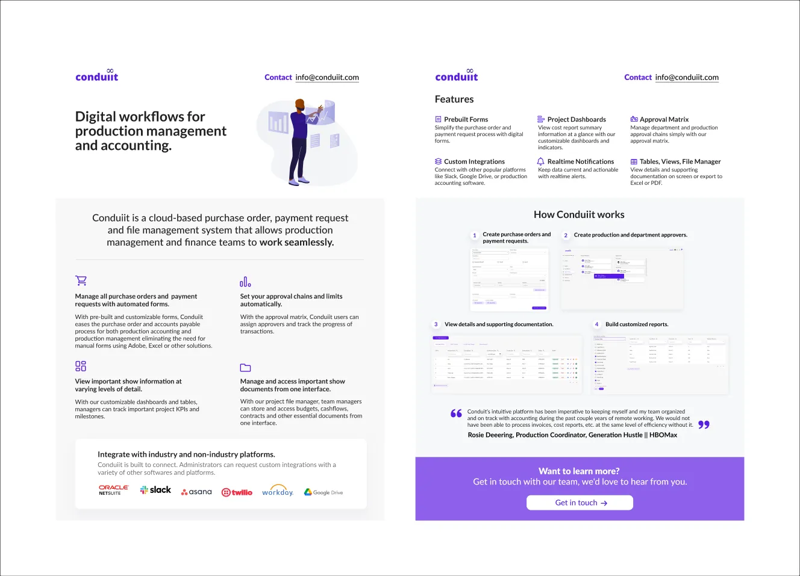
Looking back
Conduiit still runs on the system we built while I was there, and its clients still work in the same dashboards.
The choice that paid off most was treating the company color as a token. Every component reads its primary from one place, so branding a studio's workspace became a setting the client changes on their own.
What I missed: the cost report showed budget and actual spend, but not the money already promised through approved purchase orders. Conduiit later had to add those commitments to its reports, because a production can look under budget while its approved orders say otherwise. Today I’d design the report around budget, committed and actual from the first version.
What I’d do differently: agree on a baseline with the founder before the redesign starts, such as days from request to approval or how many submissions bounce back from accounting, so the impact of the new system shows in numbers and not only in screens.